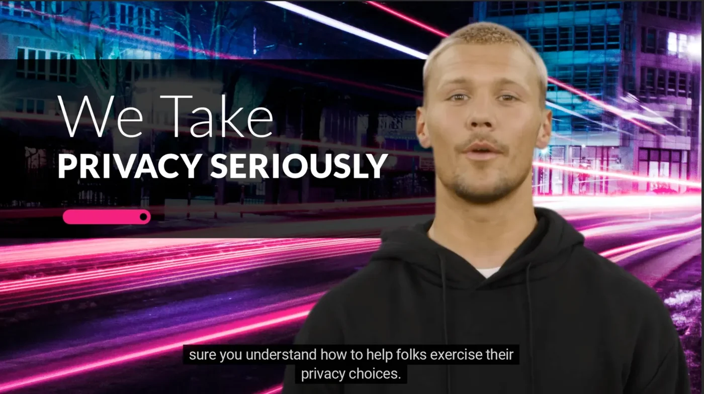
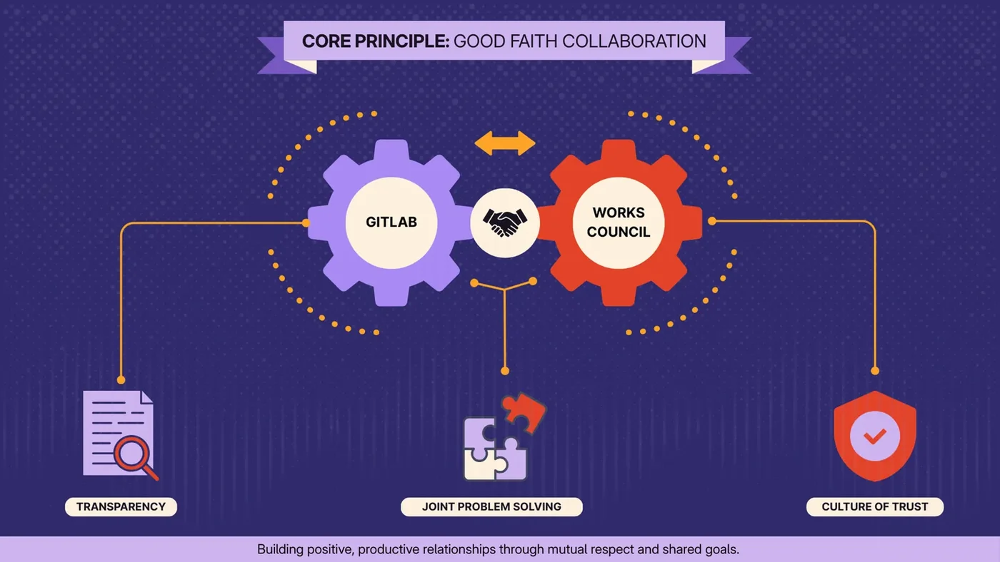
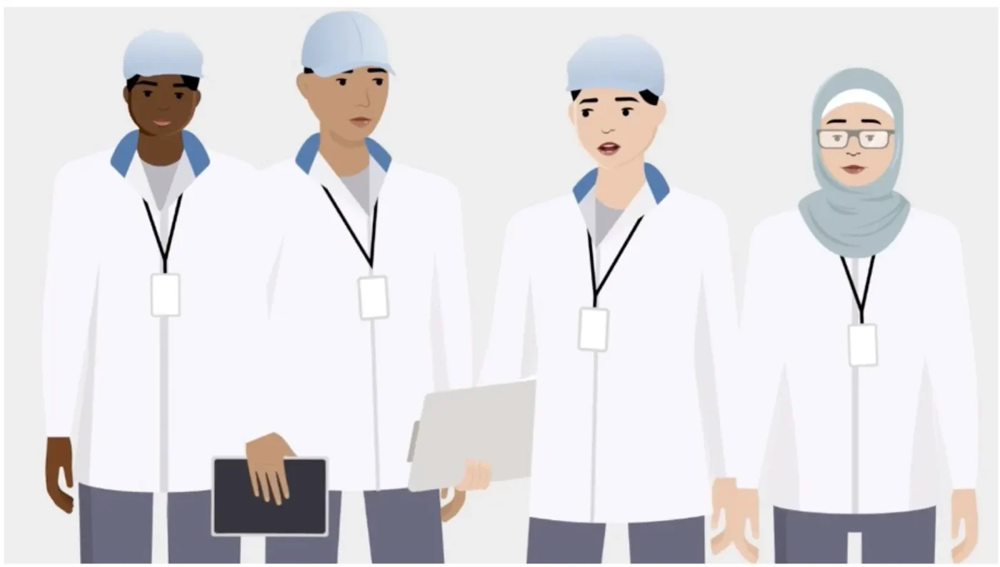
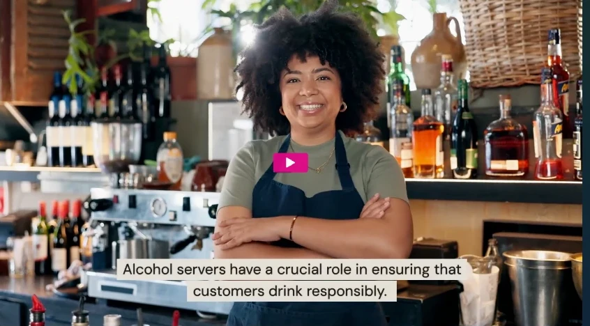
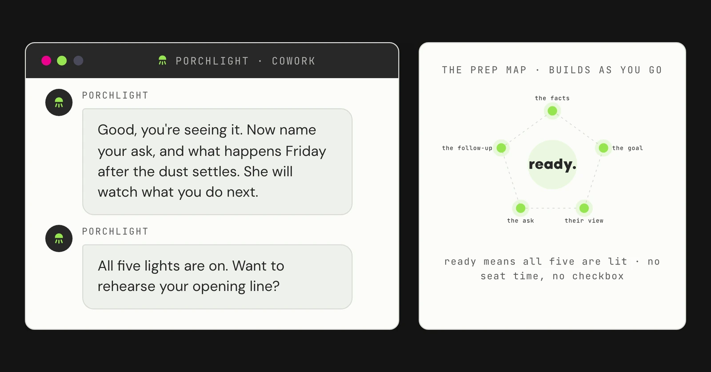
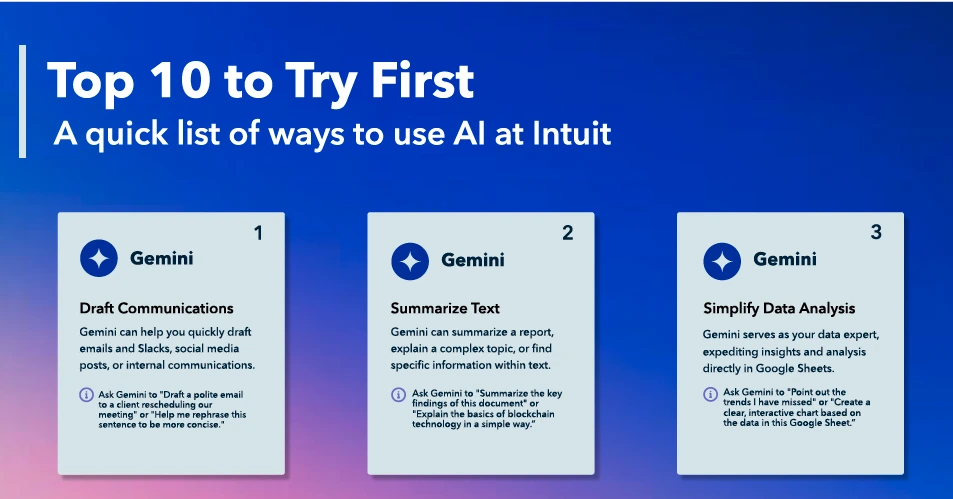

design for how humans change.
I'm Emily Green, a learning experience designer. Most training changes nothing. I design the kind that does. Fifteen years of behavioral science, learning systems, and human-centered design for Fortune 500s. Lately that includes AI rollouts people actually adopt. Don't read about the work. Run it.
four real pieces. watch them run, then run them yourself.outcomes, not completions.
all seven case files →
legal training that cut inquiries 40%.
t-mobile · legal + privacy
works council training delivered in 2 months.
gitlab · works council
supplier training across 251 companies, 31 countries.
apple · supplier responsibilitya thesis about tiktok. so i built the proof.
the people's professors · 2026
accredited alcohol server training in 5 weeks.
trust20 · gordon food services
5 modules in 90 days, built for adoption.
airbnb · ai 101 · 2026
ai-powered career growth for 10k+ employees.
intuit · career growthi study how people actually change, then i design.
the approach, in one sentence →observe.
What people actually do on the job, not what the deck says they should. Interviews, shadowing, the real workflow.
design for the behavior.
Action Mapping. Every screen, module, or prompt exists because a specific behavior has to change. Content that doesn't earn its place gets cut.
measure whether it moved.
Kirkpatrick, level three. Completion is the metric everyone reports. Behavior is the one that matters.
the thinking is the job.
This is my portfolio: the work I ship, the labs I build, and the resources I make along the way. I'm a Senior Instructional Designer at Maestro and not looking for new work. Comparing notes and speaking invitations are always welcome.